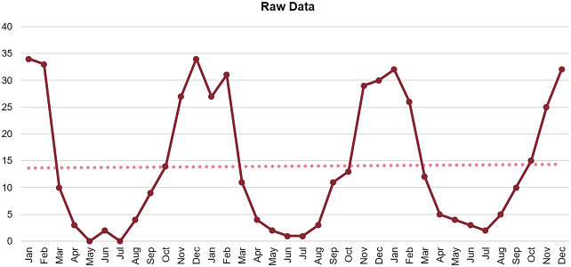

One structured, iterative process that can be used to ensure that demand-influencing activities are being continually adapted to current situations is the plan-do-check-action model. We also review the marketing side's demand-influencing levers: the 4Ps (product, price, placement, and promotion). After that, since different types of influencing are needed for different life cycle stages, these life cycles are first introduced and then their use in product life cycle management (PLM) is described. PLM involves additional focus on both the very early stages of a product life cycle as well as the ending of sales and service.
Plan-Do-Check-Action Model
📖 ASCM Definition — plan-do-check-act (PDCA):
The PDCA model, shown in Exhibit 1-27, incorporates performance measurement, feedback, and replanning into the processes of planning and executing activities. Note that while PDCA is described here for demand influencing, it can be applied to any process, including the other components of the demand management process and the sales and operations planning (S&OP) integration process.

Plan Phase
During the "plan" phase, product/brand management, marketing, and sales perform research and develop detailed strategies and tactics for influencing demand. The plans should include a budget, a schedule, and a list of tasks assigned to specific individuals for accountability. The plans should also set measurable targets indicating the increase in demand that the activities should generate. The plans are reviewed and approved prior to the S&OP meetings and are adjusted as needed during those meetings, resulting in commitments to execute a consensus plan.
Do Phase
During the "do" phase, product and brand management, marketing, and sales execute the plans. Product and brand management professionals launch, manage, and retire products. Marketing professionals work to create demand and reinforce the brand value. Salespersons work to acquire new customers and retain and develop existing customers. Sales and marketing professionals may be required to provide the demand manager with periodic data on actual results. The marketing and sales managers and the demand manager exercise management and control during this phase by serving as problem solvers and by verifying that the correct activities are occurring.
Check Phase
During the "check" phase, the demand manager and/or other demand-side managers review metrics against the plan and document other feedback, such as customer opinions on product pricing, features, and customer service levels. A key aspect of this phase is to determine the root cause of any differences between plan and actual results, that is, whether they arise from identifiable internal or external factors. These activities are performed periodically rather than waiting until the processes are complete. Dashboards are a common way to track and monitor metrics for demand-influencing activities.
Action Phase
During the "action" phase, the demand manager leads replanning efforts to respond to variances from the plan and address root causes of the variances. Replanning may call for increased or decreased investments in various activities depending on what is and is not proving effective. The replanning process could be part of the lead-up to the monthly S&OP process, or it could be performed more frequently if required. However, many marketing efforts take a long time to show measurable results, so a long-term focus is typically necessary.
Demand Influencing: Demand Generation
A key aspect of demand influencing is called demand generation. Demand generation involves translating latent demand identified during market research into active demand for a product or service using various forms of communications with potential customers.
Demand generation is critical for new product introductions since most new products fail. The market could either stay with the product it already knows or just not notice the new product. With no historical data to guide forecasts, marketing and sales have to operate on instinct, experience, connections to past products, and market research. A great deal depends upon that research. And the rest depends upon what the marketing experts do with that research, both in the product design phase and during the introduction.
Most of all, the product really has to give the market what it wants.
If market analysis has correctly identified the needs and desires the new product can satisfy, marketing at least has a good chance to develop a campaign that triggers robust sales. Of course, all those sales have to be matched by production and delivery so your supply chain doesn't run out of stock and have to turn away eager buyers.
Marketing's major responsibilities when developing a campaign for a new product or rebranding an existing product include educating customers and supply chain partners.
Educating customers. The potential buyer has to know that your product is out there. Marketing has to know where buyers are and how to reach them. This means crafting the right message, one that emphasizes the product's unique benefits and connects them to customer needs and desires that were uncovered during market research. Generating product and brand awareness are activities that often take longer and require more effort than is planned and budgeted for. Therefore, a longer planning horizon and regular feedback on marketing progress are necessary to increase the chances of a successful product introduction.
The message also has to be conveyed through the appropriate media: print ads (Which periodicals?), television, or internet advertisements (Which programs and time slots or websites? Which ad agency? Which style of presentation?), social media presence, email, telemarketing, in-person visits, public seminars, and so on.
Finally, marketing has to know who the buyer is. That's not always as obvious as it sounds. For example, a new type of exterior junction box may have to be marketed to, and accepted by, developers, general contractors, carpenters, and electricians as well as regulators and inspectors. Getting the word out will probably require personal visits and demonstrations. The end user, the homeowner who may eventually plug some outdoor lights into that box, is actually of no importance in the marketing campaign.
Educating supply chain partners. Part of getting a product accepted is getting it understood by those who have to design, build, transport, and sell it. Working in conjunction with engineers, suppliers, logistics managers, retailers—and whoever may be involved along the way (like those homebuilders in the preceding junction box example)—marketing has to be certain that the product is produced, carried, stored, and sold by people who understand it. Training and job aids may have to be designed and delivered at multiple levels.
Before using product, price, placement, and promotion to influence demand, a foundational aspect of influencing demand is to influence the organization to support actual customer expectations and needs. However, this influence must be directed toward the organization's business objectives. Specifically, this means that the organization should support only products and services that have a positive contribution margin. A positive contribution margin means that the increased demand will increase net income (profit) rather than simply increasing sales volume or revenue. Expanding product mixes and varieties to satisfy all customers could otherwise result in unsustainable costs and growth.
Demand-influencing activities may also involve convincing customers to accept substitutions or changes in purchase timing. The purpose of demand influencing is to support the organization's business objectives, and sometimes the best way to support these objectives is to convince customers to purchase an alternative product or to delay purchases. Substitution may occur because one type of product is in surplus or because there is limited capacity and not all customers can be served without making full use of all products in a product family. Convincing customers to delay purchases or wait in some form of queue can also accommodate capacity limits. In another example, a promotion or discount could be timed to a period in which there is excess production capacity. Similarly, new product introductions or decisions to drop a product line can be timed to lessen the impact on other product lines.
Influence over departments such as marketing and operations is not a given, and this is especially the case when dealing with multiple organizations. Developing and maintaining influence requires leadership skills and a certain amount of humility. For example, a supply chain partner may have very good reasons for wanting to have a sale in a particular month. Collaboration on influencing demand may require listening, understanding positions, selling the benefits of changes to partners, and reasonable compromise.
The Four Ps of Marketing and Demand Shaping
📖 ASCM Definition — four Ps:
📖 ASCM Definition — demand shaping:
Product and brand management, marketing, and sales activities influence demand by developing products that customers are actually demanding, settling on the most profitable product mix, setting strategic pricing, placing products at various physical or online distribution points to establish a presence and level of customer convenience, and promoting products through advertisement and other means.
Customer-focused marketing, customer segmentation, and customer relationship management (CRM) philosophies have transformed these components of traditional marketing to respond to the changes in today's marketplace. In traditional marketing, there was a product aimed at a single targeted audience. There was one price, one channel of distribution, and one marketing message. In customer-focused marketing, a product/service package might be marketed to a particular niche segment or customized to appeal to the needs and wants of several market segments.
A customer-focused strategy may contain all of the traditional components of a marketing program or may, depending on the situation, focus on one or two components. We will therefore continue to use the terms of traditional marketing to describe the components of a customer-focused program.
Product
"Product" for our purposes includes both products and services or product/service packages. In traditional marketing, a product or service was designed to appeal to a large group of consumers. The product was essentially static—perceived in much the same way by all customers. Consumer needs were important, but they were not the starting point. For example, electricity was offered to the public before the public expressed any specific needs that it would address. The technology was what was being sold; marketing and time would create the need. Similarly, the first home computers were introduced before there was broad consumer need; it took at least 10 years and the growth of the internet to create the need.
In a customer-focused world, the starting point for a product/service package is often customer need. Food products are often designed by specialized companies to appeal to the needs of certain groups. For example, a highly engineered meat substitute may deliver improved taste to a consumer who doesn't want to compromise on the desired taste experience but still wants a healthier alternative at times.
Increasingly, product/service packages may be designed to be customizable for specific customer segments. This allows the seller (or supply chain) to add desired value and competitive differentiation to the product and ideally sustain or grow profit. For example, a manufactured building like a barn or storage facility may have elements (like windows, doors, partitions, porches, or trim) that can be combined in various ways to create structures that meet very specific needs and tastes. The same credit card may actually be multiple card programs distinguished by features that offer values to specific groups, such as low transfer rates, frequent flier mileage, or co-marketing partners.
Value-added products have various implications for a customer-focused program:
- The product itself must be designed to fulfill customer expectations and pose few challenges for customer use. This necessitates extensive research and/or customer involvement.
- The product must be manufactured or created to meet quality levels that satisfy customer expectations and business profit margins. Performance must be continuously and scrupulously measured.
- Promotion and distribution must be customized as well to address the distinctive needs of a segmented audience. The performance of the program must be tracked so that the program can be retooled for higher performance.
- Sales methods may need to be customized and measured for effectiveness. The sales force must be thoroughly familiar with each product they sell—with its intended audience and use as well as with the marketing goals for the product. Ideally, they should be aware of what the customer has bought before.
- Customer care personnel must also be familiar with each product variation, its use, and its potential problems. Ideally, they should be familiar with what the individual customer has bought and the status of the order without having to be told by the customer.
Price
Pricing is generally a strategic decision, based on competition, perceived value, and brand identity. While some businesses may still calculate profit by adding an acceptable and competitive price margin to the total costs of creation, sales, and overhead, many take a more nuanced approach to pricing. If the market is highly competitive and a product has become a commodity, price will be dictated by the competitive situation, but in a more differentiated marketplace, pricing becomes more subjective.
In pricing a new drug, for example, a pharmaceutical company may consider not only their research and development, marketing, and manufacturing costs but also the value of the drug to patients. How much would a person pay for a drug that enabled him or her to return to work or that caused fewer side effects? How much would a person pay if there were no other products on the market that could do this?
In the customer-focused business model, price and product are tightly connected. Price may be another way to differentiate products for specific customer segments. For example, a credit card company may waive annual fees for highly desirable customers who carry a balance from month to month. A computer company may create product/service packages for different customers. Customers who buy more frequently or who buy more expensive systems may receive free upgrades to higher-performance features or may receive free in-home repair service.
Obviously, strategic pricing must be carefully and frequently analyzed to ensure that the pricing structure is attractive to customers but still profitable to the business. Specific sales data for customer segments are invaluable, as they can help automate delivery of messages intended to move customers into different pricing groups.
Demand is not an absolute; it increases and decreases depending on many factors, and price is often the major variable.
What pricing is too high to penetrate the market? What pricing is too low to cover salaries and bonuses and still return a profit? Demand is not an absolute; it increases and decreases depending on many factors, and price is often the major variable. Demand may rise as the price falls, but even that correlation has its limits. Some products sell better at a price slightly more than that of the competition, because a higher price adds to their status appeal. A light bulb may be perceived as a better value due to a higher price and a recognized brand name, even if its generic equivalent is produced on the same production line and is identical but for the name. But for some products, and in some markets, the "everyday low price" draws customers in. Synchronizing the selling price with the costs of design, manufacturing, and logistics is an area in which marketing can collaborate across functions and companies.
Placement
Placement, or distribution, is another task that falls to the marketing department. Where is the right place—or the right combination of places—to sell the product to the target market in sufficient quantity to meet the demand forecast?
Placement has traditionally referred to the way in which a product is sold—how the product or service gets into the hands of the customer. A company might decide, for example, to distribute its product through warehouses and retail outlets, through a direct sales force calling on customers, or through a website. It's worth noting that placement was traditionally a one-way form of communication: product being placed by shipping it to outlets or selling it through a sales force, or customers placing orders.
In the most traditional location—retail store shelves—placement can include the design of the display. While this might seem to fall naturally within the competence of the retailer, in VMI (vendor-managed inventory) partnerships the supplier may design and construct the display as well as manage the replenishment.
In the customer-focused model, placement is often referred to as the contact channel strategy. It is a means to increase profitability, first by ensuring that the most cost-effective and customer-preferred channel is used for distribution and second by securing lifetime customers through effective customer care and research activities.
Customer-focused placement may be determined by customer segment. Essentially identical product may be distributed through different channels that have been chosen because they match the communication and contact preferences of different customer groups. Airline tickets may be sold on the internet, at automated kiosks, at counters, over the phone, via mobile device app, or through intermediaries (agencies). Different means of placement may affect pricing, however. High touch customer service methods may command a premium price.
Improved transportation has made placement itself a key element in a product/service package. For example, placement may be customized according to the customer's need for fast delivery (regular speed, faster, overnight). Other transportation may specialize in consistent delivery that is neither early nor late.
Customer-focused placement requires a more interactive form of communication than traditional placement does.
Customer-focused placement requires a more interactive form of communication than traditional placement does. Since customers must be satisfied and since information about the customers' actions and attitudes is critical to the business, information must flow back and forth between the business and the customer. Thus, in the customer-focused model, placement includes the way in which the customer gains information about the product and post-purchase support. Interactive contact channels include call centers, online repositories that allow customers to find desired information, websites that incorporate live dialogue or email communication, and chat rooms for users. Many sites provide incentives for users to share more information, such as getting a free demo of the product for filling out a survey.
One-way channels may also be used in customer-focused placement; these include direct marketing (direct mail, mass mailings by fax or email, telemarketing, and social media presence) and media-based marketing (television, radio, newsprint, periodicals, trade publications, banner ads, billboards, etc.).
Throughout the communication process, information is continually being gathered. This information may point out commonalities and trends that suggest future product crafting, promotion, and support.
Technology has greatly changed customer care. It's hard to imagine a new product introduction campaign that doesn't use e-commerce as part of the mix. A website is necessary even if only for informational purposes. Many products can be both advertised and sold online through one's own site or through third-party sites. Customers can download software and hardware documentation and manuals, refer problems to automated expert systems, consult information databases, and communicate with technical support or even other customers about problems or questions. Digital products can be advertised, ordered, and shipped via the web; software applications, music, movies, and written materials are examples.
The channel strategy must be continuously evaluated to ensure that it is fulfilling the needs of both the customer and the business. From the customer's perspective, an effective channel has the following characteristics:
- Accessible. Are help lines toll-free numbers? Do the hours of operation facilitate different time zones or work schedules? Do websites reflect current or real-time changes? Can the customer contact the organization by chat or text?
- Reliable. Are materials or services available within the expected time frame without exception? Is the social website always operational?
- Complete. Can the customer get accurate, current, and complete answers?
- Secure and error-free. Is e-commerce adequately encrypted? Are orders taken accurately?
- Direct. Can the customer reach someone who can assume ownership for the issue, has decision-making authority, and can resolve a problem? Are questions easily answered by phone or automation?
- Convenient. How many handoffs does the customer have to pass through before reaching someone who can actually solve a problem or answer a question? How much hunting on the website is necessary? How long is a caller on hold?
- Fast. Does the customer have to repeat account and problem information or can all the customer care personnel access this information automatically? Does the customer receive a quick response to emails or phone messages?
- Flexible. Can the business be reached easily by those with and without computers? Are there accommodations for non-native speakers?
- From the business's perspective, the channel must allow the following:
- Control and consistency. Does the channel promote the intended values, ideas, or content? Is every customer's experience the same?
- Profitability. Does the channel minimize the use of expensive human resources, for example, by using automation whenever possible?
Promotion
The last of the four Ps, promotion, includes such marketing activities as consumer research and market analysis; segmentation of customers or audience; setting of strategy for targeted segments; planning, creation, and placement of advertising; and creation of brand image. It also involves determining and communicating the timing of marketing and promotional activities and collecting feedback on their impact.
All of the traditional promotional activities are still valid in a customer-focused business model. What is different is the level of research, segmentation, and customization of the promotional message or offer that is possible. With customer relationship management technology, businesses can capture information about every interaction with customers. This enables unparalleled opportunities to study buyer motivation and behaviors and to segment customers into groups with distinctive CRM programs. Printing technologies allow for cost-effective customization of advertising materials. The explosion of communication channels—including not only the web but also satellite radio, podcasts, and email—allows businesses to select alternative channels that offer clear advantages for specific audiences.
Let's look more closely at two factors related to promotion: branding and packaging.
Branding. Customer-focused promotion helps to create the brand. As defined in the ASCM Supply Chain Dictionary, branding is "the use of a name, term, symbol, design, or a combination of these to identify a product."
An organization's or product's brand can be worth a considerable sum to market analysts. Google's and Facebook's brands were worth billions at the time of this printing. The worth of such brands is based partly on current market share and total number of customers and partly on image, which is an intangible quality that sums up a brand's awareness, popularity, and reputation. As is said about reputation, brand image is something that takes years to build up but that could be destroyed in an instant. Therefore organizations take great pains to protect their brand image.
Part of educating customers about a new product is choosing a name and logo that emphasizes product characteristics that will attract targeted segments. If the initial research accurately measures customer needs and attitudes, and if the product's design successfully incorporates those selling points, then the name should follow suit. Automobile names often highlight concepts that appeal to a target market. Dodge Ram emphasizes toughness and power; Jaguar suggests grace, speed, and elegance; Honda Civic implies a sensible, economical city car.
A new product's name and the logo that represents it visually can either link the product to an existing product family or set it apart. The name Macintosh kept the familiar association with Apple but also signaled the advent of a new line of products. Sometimes a new model can be created from an existing model simply by acquiring a different name.
Perhaps because of the rate of change in product availability, customers are increasingly transferring their loyalty from specific products (e.g., a line of jeans) to the provider of those products (i.e., the retailer who keeps those jeans available in the right size). They grant their business to these organizations because they trust that they will find the products they are looking for and that they will be taken care of if any problems occur. This means that businesses must keep in close touch with what customers want and are buying so that they can continually upgrade, alter, or customize product and supply chain options to meet customer expectations. They must also ensure customer satisfaction. Because customers are more aware of service, products, and the personal experience they should receive, a single failure may undo the brand image and drive customers to a competitor. Dissatisfied customers have the means to make their disloyalty well known. Complaints posted on popular apps, websites, blogs, tweets, chat rooms, or other social media can have a significant impact on today's internet-savvy customer and can destroy a once-strong business relationship.
Packaging. The package that contains a product also serves a marketing purpose. The more obvious marketing elements of packaging—colors, images, words, even the textures of the wrapping—are marketing devices.
The package should command attention and reinforce the features and benefits that sell the product. (Market research such as focus groups provide this insight.) Some packages are educational or functional—like food boxes containing cooking instructions on the outside or packaging that facilitates proper cooking of the item.
Packages can promote other organizational goals such as sustainability. Hewlett Packard's laser cartridges are packaged in a box that can be used to return the spent cartridge, thus solving the end user's reverse logistics problem and protecting the environment. Market research likely determined that such a box would increase the number of cartridges that were returned, which would reduce net costs even after the free shipping expenses were included.
Services, too, are "packaged" for sale. Presentation of meals, design of hospital waiting rooms, and the uniforms worn by many service personnel—all these matters of style and appearance serve a marketing purpose.
Product Life Cycle Stages
Product design is only the first step in a product's life cycle. In supply chains, it is important to remember that after a product has been designed, produced, and sent off into the market, the product life cycle undergoes different stages that impact how the supply chain for the product might be handled. The product life cycle can be defined as "the stages a new product goes through from beginning to end." (Refer to the ASCM Supply Chain Dictionary for more information.) As illustrated in Exhibit 1-28, an extended product life cycle includes development, introduction, growth, maturity, and decline.

Development. Product (or service) development is the incubation state of the product life cycle. There are no sales at this point as the organization prepares to introduce the product. Traditionally, this is the period when market research, product design or service definition, testing, and finalization are accomplished.
Introduction. During the introduction stage, sales of the product or service will be low until customers become increasingly aware of it and its benefits. The organization is likely to have additional costs associated with establishing distribution of the product or service. The higher costs added to the low sales volume typically make this stage a time of negative profits.
Growth. The growth stage is a time of rapid revenue growth. Sales increase as more customers become aware of the product and its benefits. Once the product has proven success and customers begin seeking it, sales will continue to increase as retailers become interested in offering the product. Distribution may be expanded at this point. During this stage, competitors may enter the market. The organization's promotional costs may increase in order to sustain market share.
As the base of customers and distributors grows, businesses must commit increased resources to both satisfying the market's needs and gathering and analyzing data in an ongoing manner. Production and inventory levels must be managed to avoid stockouts or delays that could lead to customers switching brands. A make-to-stock strategy may work well for many products in the growth stage.
Maturity. The maturity stage is the most profitable. While sales continue to increase, they do so at a slower rate. Competition will result in decreased market share and/or prices. The competing products may be very similar at this point, making it difficult to differentiate them from that of the organization.
Decline. Eventually sales begin to decline as the market becomes saturated, the product becomes technologically outdated, or customers' tastes change. If the product has developed brand loyalty, profitability may be maintained longer, but with the declining production volumes and increased unit costs, eventually no more profit will be made. Organizations that used a make-to-stock strategy may need to transition to a make-to-order strategy to prolong profitability as long as possible. Ideally, new products have been developed and the cycle will continue.
📖 ASCM Definition — life cycle analysis:
Product Life Cycle Management
📖 ASCM Definition — product life cycle management:
Product life cycle management (PLM) is a process of managing new product introductions, managing the life cycles of products throughout their phases, and creating and executing end-of-life plans. PLM may feature a sustainability component, especially if products at the end of their lives must or should be reclaimed or recycled. PLM can be managed using software of the same name or can be performed using a mix of manual tools and existing systems.
In addition to helping manage the product life cycle for a type of product, PLM software also has tools to help manage the individual life cycle of a unit or a batch. It often includes tools to help planners with product, component, and bill-of-material versioning, effectivity plans (plans for when to make a particular set of engineering drawings and documents be the official version as of a particular effectivity date), and traceability. PLM software can help track products by production lot numbers or serial numbers all the way to the customer for individual units or batches. This helps enable upgrades, recalls, and reverse logistics for units or batches at any stage of production.
PLM from a product and brand management perspective builds off of the product life cycle stages of introduction, growth, maturity, and decline but adds substeps. Some models also highlight three distinct phases: beginning of life, middle of life, and end of life. Beginning of life includes a new component of research and development plus the introduction stage. The middle-of-life phase encompasses growth, maturity, and decline. The end-of-life phase is new to the product life cycle (but implied by it). Exhibit 1-29 shows these phases and lists potential substeps in PLM. (Specific substeps may vary.)

Development. Product (or service) development is the incubation state of the product life cycle. There are no sales at this point as the organization prepares to introduce the product. Traditionally, this is the period when market research, product design or service definition, testing, and finalization are accomplished.
Introduction. During the introduction stage, sales of the product or service will be low until customers become increasingly aware of it and its benefits. The organization is likely to have additional costs associated with establishing distribution of the product or service. The higher costs added to the low sales volume typically make this stage a time of negative profits.
Growth. The growth stage is a time of rapid revenue growth. Sales increase as more customers become aware of the product and its benefits. Once the product has proven success and customers begin seeking it, sales will continue to increase as retailers become interested in offering the product. Distribution may be expanded at this point. During this stage, competitors may enter the market. The organization's promotional costs may increase in order to sustain market share.
As the base of customers and distributors grows, businesses must commit increased resources to both satisfying the market's needs and gathering and analyzing data in an ongoing manner. Production and inventory levels must be managed to avoid stockouts or delays that could lead to customers switching brands. A make-to-stock strategy may work well for many products in the growth stage.
Maturity. The maturity stage is the most profitable. While sales continue to increase, they do so at a slower rate. Competition will result in decreased market share and/or prices. The competing products may be very similar at this point, making it difficult to differentiate them from that of the organization.
Decline. Eventually sales begin to decline as the market becomes saturated, the product becomes technologically outdated, or customers' tastes change. If the product has developed brand loyalty, profitability may be maintained longer, but with the declining production volumes and increased unit costs, eventually no more profit will be made. Organizations that used a make-to-stock strategy may need to transition to a make-to-order strategy to prolong profitability as long as possible. Ideally, new products have been developed and the cycle will continue.
📖 ASCM Definition — life cycle analysis:
Product Life Cycle Management
📖 ASCM Definition — product life cycle management:
Product life cycle management (PLM) is a process of managing new product introductions, managing the life cycles of products throughout their phases, and creating and executing end-of-life plans. PLM may feature a sustainability component, especially if products at the end of their lives must or should be reclaimed or recycled. PLM can be managed using software of the same name or can be performed using a mix of manual tools and existing systems.
In addition to helping manage the product life cycle for a type of product, PLM software also has tools to help manage the individual life cycle of a unit or a batch. It often includes tools to help planners with product, component, and bill-of-material versioning, effectivity plans (plans for when to make a particular set of engineering drawings and documents be the official version as of a particular effectivity date), and traceability. PLM software can help track products by production lot numbers or serial numbers all the way to the customer for individual units or batches. This helps enable upgrades, recalls, and reverse logistics for units or batches at any stage of production.
PLM from a product and brand management perspective builds off of the product life cycle stages of introduction, growth, maturity, and decline but adds substeps. Some models also highlight three distinct phases: beginning of life, middle of life, and end of life. Beginning of life includes a new component of research and development plus the introduction stage. The middle-of-life phase encompasses growth, maturity, and decline. The end-of-life phase is new to the product life cycle (but implied by it). Exhibit 1-29 shows these phases and lists potential substeps in PLM. (Specific substeps may vary.)
The substeps shown above contain many steps for the beginning-of-life phase. The middle-of-life phase shows how the focus area during growth starts by ensuring that manufacturing and distribution are capable and have the capacity for the demand. As the product moves into maturity, this shifts to a focus on how the product is used. The focus then shifts to service as the product enters decline. Decline also features phase-out or end-of-life planning. Actual phase-out ends the decline phase. There may be a mandatory support and service provision period for the expected life of the last products sold or, at a minimum, for the warranty period. The organization may be involved in helping recycle the products at the end of their lives, and this could also include recovering rare or hazardous materials, remanufacturing, repurposing or selling manufacturing equipment, reassessing suppliers, and so on.
New Product Introduction Schedules
Developing a new product introduction (NPI) schedule involves mapping out and managing the process. This may include using project management. NPI is a component of the development chain, which parallels the supply chain and interacts with it at many points. In addition to NPI, the development chain may include product engineering, make-or-buy decisions, early supplier involvement, concurrent engineering, strategic sourcing, supplier footprint, and contracting with capable suppliers. Here are some potential phases in NPI or the development chain:
- Innovation. During this phase, research is conducted. This can include market research (e.g., collecting and disseminating customer feedback), competitor scanning, experimentation, and invention.
- Concept. Research coalesces into a vision of the product/service that is vetted for customer demand and financial promise.
- Development. Engineering, manufacturing, and other functions may work together to add detail to the concept through a number of iterations. Concurrent engineering or design for manufacturability, logistics, or the environment may be applied to ensure that the product will be cost-effective to source, transform, and fulfill.
Prototyping. A working model of the product and related services is developed. A prototype's purposes include proving feasibility and eliciting feedback. A prototype schedule helps manage iterations of the prototype that capture feedback both from the demand side and the supply side. Demand-side inputs include focus groups and market-based release deadlines; supply-side inputs include make-or-buy analysis, supply availability, production feasibility and cost, product architecture (e.g., integrated versus modular), scalability and economies-of-scale plans, and capacity requirements versus current load.
Engineering. Engineers develop the product structure and bills of material, including detailed drawings, tolerances, level of modularity, and manufacturing requirements. A document management system can be used to help manage configuration (versions) and collaboration efforts.
Supply. Supply requirements are developed, capable suppliers are identified, and the supply footprint is mapped out. It is important at this point to review supply constraints that may impact the NPI schedule. In addition to finding capable suppliers fast enough, another supply constraint is lead time versus cost, which can be significant due to global sourcing. This differs by product type:
- Innovative products typically require compressed timelines to shorten time to market.
- Functional products tend to have low margins, making cost the primary factor.
Manufacturing. While manufacturing is listed in Exhibit 1-29 as a middle-of-life activity, clearly manufacturing capability and capacity need to be developed earlier, at least to the degree needed for the first planned phase of demand. The manufacturing choices are also determined. Future demand growth may later require more investments in capacity and throughput.
Launch. Marketing and sales launch the product and foster awareness of it.
Note the mention above of innovative versus functional products. Different sorts of products will require different NPI frequencies and different supply chain strategies to make them work, as discussed more next.
NPI Frequency versus Demand Uncertainty
New products occupy a spectrum from innovative products at one end to functional products at the other end. Designing and Managing the Supply Chain cites an article by Marshall Fisher, who coined the term technology clockspeed. Clockspeed is the rate of technology change for the given industry, market, or product. Clockspeed strongly influences the duration of the product life cycle. Innovative products have fast technology clockspeeds and life cycles, while functional products have slow technology clockspeeds and life cycles. Fast clockspeeds require compressed NPI schedules.
The product design strategy and the supply chain strategy need to align with the type of product being developed. For example, organizations that have a strategic focus on innovation as their basis of competition may have one supply chain specifically dedicated to new product introductions and a different supply chain for established products. They will also need to ensure that new products are designed for the supply chain (in part by collaborating with suppliers) so speed, dependability, or cost objectives can be met.
An important supply chain factor to consider is demand uncertainty. Items with low demand uncertainty can be pushed out to the market because there is steady demand. Items with high demand uncertainty should move more toward a pull model so that only what is demanded is produced. Exhibit 1-30 compares NPI frequency to demand uncertainty, which results in four quadrants of product types.

As shown in the graphic, the four categories of products are as follows:
Unstable demand, low clockspeed. The life cycle for the products is long, and the products can have an integral design (not modular). The products can be pushed to a certain point (e.g., components produced based on a demand forecast), and then demand-pull can take over (e.g., final assembly in response to actual customer orders). This could occur by centralizing inventory and drop-shipping, for example.
Unstable demand, high clockspeed. Due to the high rate of change and short life cycles, manufacturing uses pull manufacturing (e.g., make-to-order) and highlights responsiveness over cost. Modular designs, short lead times, maintaining excess capacity, and dynamic market pricing can help ensure that supply can quickly respond to changing demands.
Stable demand, low clockspeed. These are staple items that have low margins and need to be produced economically and create high turnover to ensure profitability. Since these are make-to-stock items, they can have an integral design.
Stable demand, high clockspeed. There are few finished goods in this category, but many types of components fit in this area if enough buyers exist to keep demand stable. Due to the short product life cycles, modular designs enable variations on products, and, as NPI occurs, portions of the product or component that don't need to change might be able to be used in the new version. Push manufacturing and supply chain efficiency help ensure profitability.